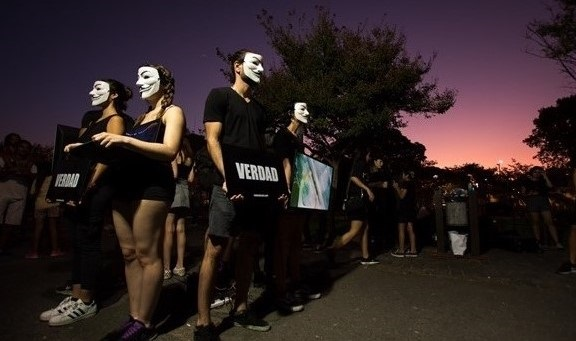
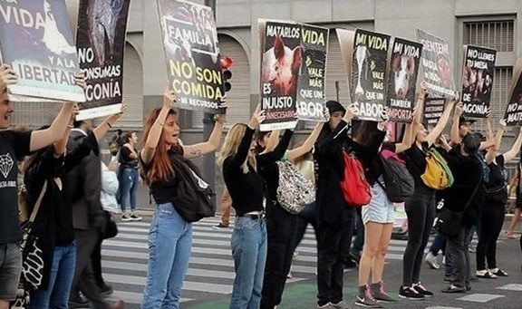
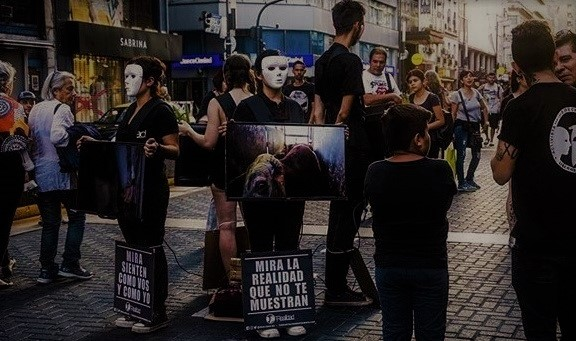

Inicio
Conferencias
Activismos
Preguntas Frecuentes
Contacto
ACTIVISMOS EN ARGENTINA

Anonymous for the voiceless
"Cubo de la verdad", Buenos Aires.

Empatía Animal
Buenos Aires.

Realidad
"Círculo de la compasión", Buenos Aires.
Previous
Next
ORGANIZACIONES
ZONA
REDES SOCIALES
Anonymous for the voiceless
CABA
cubodelaverdad.ba
Anonymous for the voiceless
La Plata
cubodelaverdad.lp
Anonymous for the voiceless
San Justo
cubodelaverdad.san.justo
Anonymous for the voiceless
San Miguel
cubodelaverdad.sm
Anonymous for the voiceless
Tandil
cubodelaverdad.tandil
Anonymous for the voiceless
Bahía Blanca
cubodelaverdad_bahiablanca
Anonymous for the voiceless
Córdoba
cubodelaverdad.cba
Anonymous for the voiceless
Tucumán
cubodelaverdadtucuman
Anonymous for the voiceless
Rosario
cubodelaverdadrosario
Anonymous for the voiceless
Paraná
cubodelaverdad.parana
Empatía Animal
CABA
empatiaanimalba
Frente Antiespecista
CABA
frenteantiespecista
Realidad
CABA
realidadba